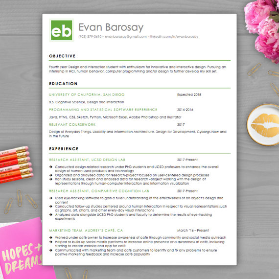

about me

Evan J. Barosay
Lets Connect!
Who Am I?
Living in sunny San Diego.
4th year CogSci Design & Interaction student looking to enter the world
of UI/UX.
Free time consists of riding my bike to the beach, playing with my dog, and of course indoor cycling!
What am I up to?
Finishing my last year at UCSD
Take a Look at my Resume!

Working as a Research Assistant in the Design Lab.
Part-time barista--making any caffeinated concoction you can think of!
Whats yet to come?
I hope to design beautiful, thoughtful, and simple digital interfaces.
I would also love to continue conducting
user-research and user-testing in the industry.
Open to many different paths, but my main goal is to always continue learning
and strengthening my skill set.